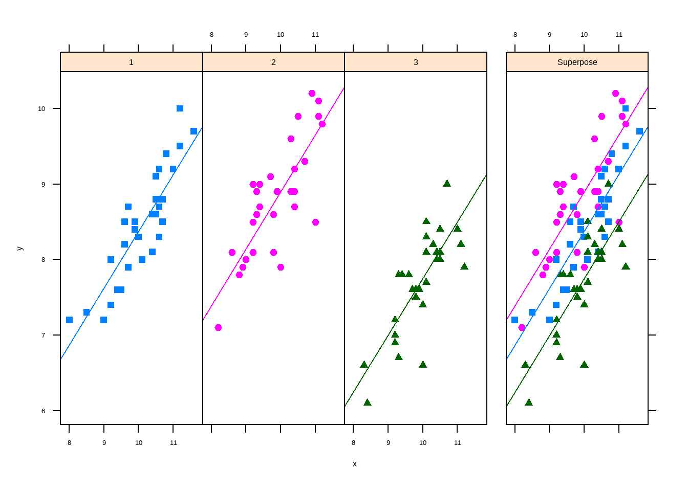
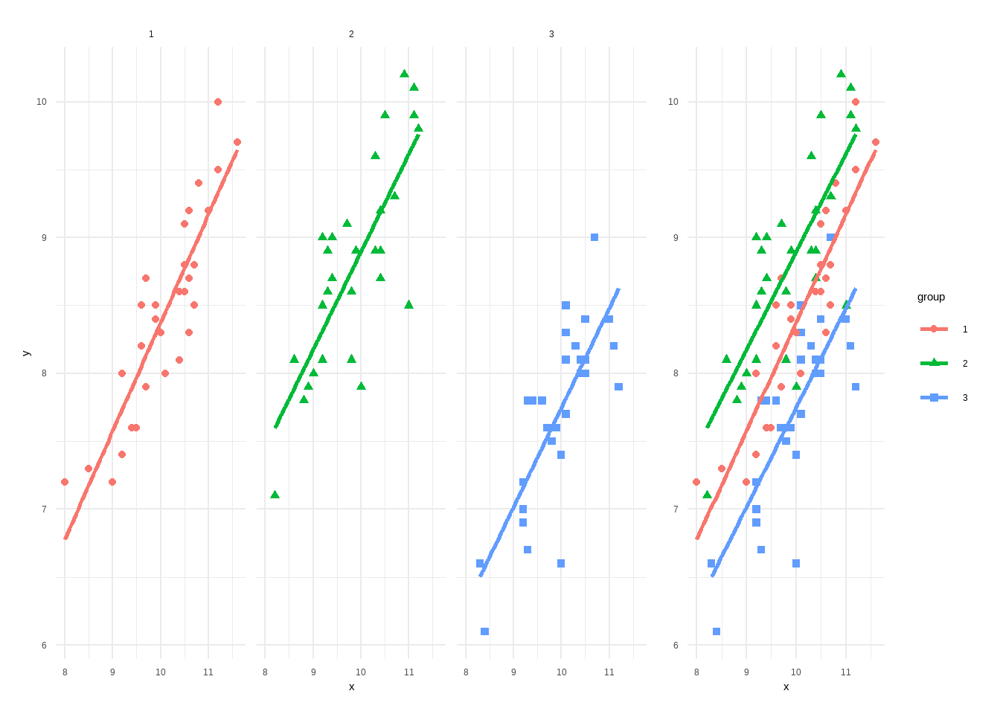

5 协方差分析
library(showtext)
## Loading required package: sysfonts
## Loading required package: showtextdb
showtext_auto(enable = T)协方差分析的使用条件：各变量服从正态分布，各变量相互独立，各样本总体方差齐；各总体客观存在因变量对协变量的线性回归关系且斜率相同（回归线平行）。
5.1 完全随机设计资料的协方差分析
使用课本例13-1的例子。
首先是读取数据，本次数据手动录入：
df13_1 <- data.frame(x1=c(10.8,11.6,10.6,9.0,11.2,9.9,10.6,10.4,9.6,10.5,
10.6,9.9,9.5,9.7,10.7,9.2,10.5,11.0,10.1,10.7,8.5,
10.0, 10.4,9.7,9.4,9.2,10.5,11.2,9.6,8.0),
y1=c(9.4,9.7,8.7,7.2,10.0,8.5,8.3,8.1,8.5,9.1,9.2,8.4,
7.6,7.9,8.8,7.4,8.6,9.2,8.0,8.5,7.3,8.3,
8.6,8.7,7.6,8.0,8.8,9.5,8.2,7.2),
x2=c(10.4,9.7,9.9,9.8,11.1,8.2,8.8,10.0,9.0,9.4,8.9,
10.3,9.3,9.2,10.9,9.2,9.2,10.4,11.2,11.1,11.0,
8.6,9.3,10.3,10.3,9.8,10.5,10.7,10.4,9.4),
y2=c(9.2,9.1,8.9,8.6,9.9,7.1,7.8,7.9,8.0,9.0,7.9,8.9,
8.9,8.1,10.2,8.5,9.0,8.9,9.8,10.1,8.5,8.1,8.6,
8.9,9.6,8.1,9.9,9.3,8.7,8.7),
x3=c(9.8,11.2,10.7,9.6,10.1,9.8,10.1,10.3,11.0,10.5,
9.2,10.1,10.4,10.0,8.4,10.1,9.3,10.5,11.1,10.5,
9.7,9.2,9.3,10.4,10.0,10.3,9.9,9.4,8.3,9.2),
y3=c(7.6,7.9,9.0,7.8,8.5,7.5,8.3,8.2,8.4,8.1,7.0,7.7,
8.0,6.6,6.1,8.1,7.8,8.4,8.2,8.0,7.6,6.9,6.7,
8.1,7.4,8.2,7.6,7.8,6.6,7.2)
)看一下数据结构：
str(df13_1)
## 'data.frame': 30 obs. of 6 variables:
## $ x1: num 10.8 11.6 10.6 9 11.2 9.9 10.6 10.4 9.6 10.5 ...
## $ y1: num 9.4 9.7 8.7 7.2 10 8.5 8.3 8.1 8.5 9.1 ...
## $ x2: num 10.4 9.7 9.9 9.8 11.1 8.2 8.8 10 9 9.4 ...
## $ y2: num 9.2 9.1 8.9 8.6 9.9 7.1 7.8 7.9 8 9 ...
## $ x3: num 9.8 11.2 10.7 9.6 10.1 9.8 10.1 10.3 11 10.5 ...
## $ y3: num 7.6 7.9 9 7.8 8.5 7.5 8.3 8.2 8.4 8.1 ...可以看到一共6列，和课本上面的一模一样，分别是x1,y1,x2,y2,x3,y3。
接下来为了进行方差分析，需要变为长数据，把所有的x放在1列，所有的y放在1列，还有一列是组别：
如果大家还对长宽数据转换不了解的，可以翻看之前的历史推文：
这是一个非常重要且使用频率极高的技能！
suppressPackageStartupMessages(library(tidyverse))
df13_11 <- df13_1 %>%
pivot_longer(cols = everything(), # 变长
names_to = c(".value","group"),
names_pattern = "(.)(.)"
) %>%
mutate(group = as.factor(group)) # 组别变为因子型
glimpse(df13_11) # 查看数据结构，神奇！
## Rows: 90
## Columns: 3
## $ group <fct> 1, 2, 3, 1, 2, 3, 1, 2, 3, 1, 2, 3, 1, 2, 3, 1, 2, 3, 1, 2, 3, 1…
## $ x <dbl> 10.8, 10.4, 9.8, 11.6, 9.7, 11.2, 10.6, 9.9, 10.7, 9.0, 9.8, 9.6…
## $ y <dbl> 9.4, 9.2, 7.6, 9.7, 9.1, 7.9, 8.7, 8.9, 9.0, 7.2, 8.6, 7.8, 10.0…所有的x放在1列，所有的y放在1列，还有一列是组别！
然后就是进行单因素协方差分析：
# 注意公式的写法，一定是把协变量放在主变量前面！
fit <- aov(y ~ x + group, data = df13_11)
summary(fit)
## Df Sum Sq Mean Sq F value Pr(>F)
## x 1 29.06 29.057 171.20 <2e-16 ***
## group 2 19.85 9.925 58.48 <2e-16 ***
## Residuals 86 14.60 0.170
## ---
## Signif. codes: 0 '***' 0.001 '**' 0.01 '*' 0.05 '.' 0.1 ' ' 1得到的结果和课本是一模一样的，组内ss=14.60, ms=0.170, v=86, 修正均数ss=19.85, ms=9.925, v=2, F=58.48，拒绝H0，接受H1，可以认为在扣除初始（基线）糖化血红蛋白含量的影响后，3组患者的总体降糖均数有差别。
结果的可视化可以使用HH包：
library(HH)
## Loading required package: lattice
## Loading required package: grid
## Loading required package: latticeExtra
##
## Attaching package: 'latticeExtra'
## The following object is masked from 'package:ggplot2':
##
## layer
## Loading required package: multcomp
## Loading required package: mvtnorm
## Loading required package: survival
## Loading required package: TH.data
## Loading required package: MASS
##
## Attaching package: 'MASS'
## The following object is masked from 'package:dplyr':
##
## select
##
## Attaching package: 'TH.data'
## The following object is masked from 'package:MASS':
##
## geyser
## Loading required package: gridExtra
##
## Attaching package: 'gridExtra'
## The following object is masked from 'package:dplyr':
##
## combine
##
## Attaching package: 'HH'
## The following object is masked from 'package:purrr':
##
## transpose一行代码即可：
ancovaplot(y ~ x + group, data = df13_11)
但其实我们也可以用ggplot2来画，可能更好看一点：
theme_set(theme_minimal())
p1 <- ggplot(df13_11, aes(x=x,y=y))+
geom_point(aes(color=group,shape=group))+
geom_smooth(method = "lm",se=F,aes(color=group))+
labs(y=NULL)
p2 <- ggplot(df13_11, aes(x=x,y=y))+
geom_point(aes(color=group,shape=group))+
geom_smooth(method = "lm",se=F,aes(color=group))+
facet_wrap(~group)
library(patchwork)
##
## Attaching package: 'patchwork'
## The following object is masked from 'package:MASS':
##
## area
p2 + p1 + plot_layout(guides = 'collect',widths = c(3, 1))
## `geom_smooth()` using formula = 'y ~ x'
## `geom_smooth()` using formula = 'y ~ x'
好看是好看，但是很明显不如HH简洁啊！
5.2 使用rstatix进行优雅的协方差分析
library(rstatix)
##
## Attaching package: 'rstatix'
## The following object is masked from 'package:MASS':
##
## select
## The following object is masked from 'package:stats':
##
## filter
res <- anova_test(y ~ x + group, data = df13_11, type = 1)
get_anova_table(res)
## ANOVA Table (type I tests)
##
## Effect DFn DFd F p p<.05 ges
## 1 x 1 86 171.199 3.64e-22 * 0.666
## 2 group 2 86 58.480 9.22e-17 * 0.576结果也是一样的！
5.3 随机区组设计资料的协方差分析
使用课本例13-2的数据。
df <- foreign::read.spss("datasets/例13-02.sav",to.data.frame = T,
reencode = "utf-8")
## re-encoding from utf-8
df$block <- factor(df$block)
str(df)
## 'data.frame': 36 obs. of 4 variables:
## $ x : num 257 272 210 300 262 ...
## $ y : num 27 41.7 25 52 14.5 48.8 48 9.5 37 56.5 ...
## $ group: Factor w/ 3 levels "A....","B....",..: 1 1 1 1 1 1 1 1 1 1 ...
## $ block: Factor w/ 12 levels "1","2","3","4",..: 1 2 3 4 5 6 7 8 9 10 ...
## - attr(*, "variable.labels")= Named chr [1:4] "..ʳ.." ".........." "........" "......"
## ..- attr(*, "names")= chr [1:4] "x" "y" "group" "block"
head(df)
## x y group block
## 1 256.9 27.0 A.... 1
## 2 271.6 41.7 A.... 2
## 3 210.2 25.0 A.... 3
## 4 300.1 52.0 A.... 4
## 5 262.2 14.5 A.... 5
## 6 304.4 48.8 A.... 6进行随机区组设计的协方差分析：
fit <- aov(y ~ x + block + group, data = df) # 注意顺序
summary(fit)
## Df Sum Sq Mean Sq F value Pr(>F)
## x 1 69073 69073 651.823 < 2e-16 ***
## block 11 4024 366 3.452 0.00711 **
## group 2 464 232 2.189 0.13692
## Residuals 21 2225 106
## ---
## Signif. codes: 0 '***' 0.001 '**' 0.01 '*' 0.05 '.' 0.1 ' ' 1
car::Anova(fit)
## Anova Table (Type II tests)
##
## Response: y
## Sum Sq Df F value Pr(>F)
## x 6174.2 1 58.2643 1.733e-07 ***
## block 3765.3 11 3.2302 0.01009 *
## group 463.9 2 2.1891 0.13692
## Residuals 2225.4 21
## ---
## Signif. codes: 0 '***' 0.001 '**' 0.01 '*' 0.05 '.' 0.1 ' ' 1结果和课本一致。